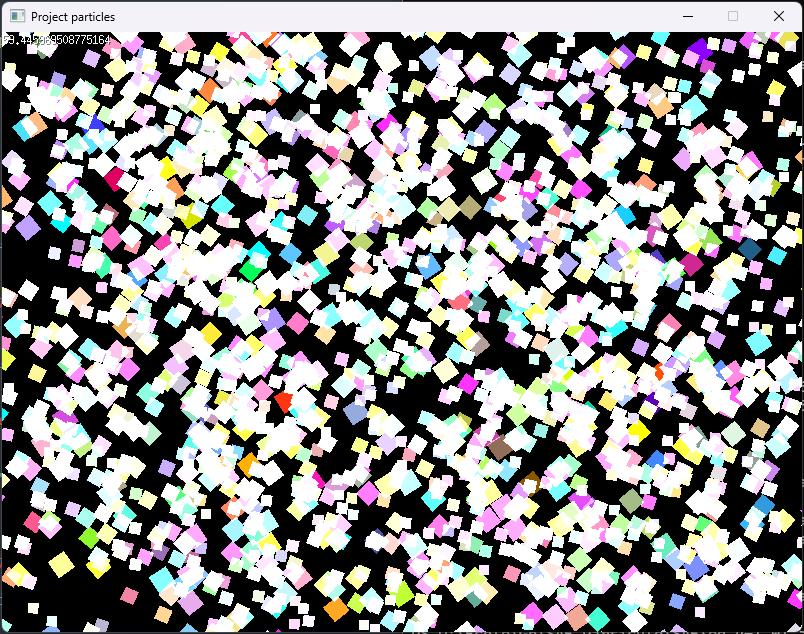
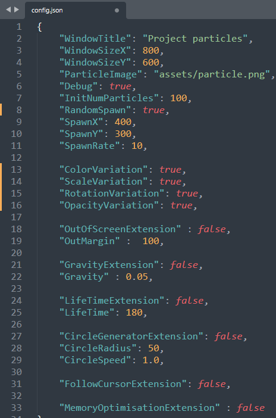

Le projet
Contexte
Projet universitaire réalisé en 3 semaines, en duo. L'objectif était de développer un système de particules en Go avec Ebiten, puis de l'enrichir progressivement avec des extensions au choix.
Phase 1 - Le système de base
La première partie consistait à créer un système de particules fonctionnel : des particules apparaissent et se déplacent. Simple, mais c'est la fondation sur laquelle tout le reste repose.
Phase 2 - Les extensions visuelles
Une fois le système de base stable, nous avons implémenté des extensions de rendu pour améliorer l'aspect graphique. Ces modifications permettent de changer l'apparence des particules et ainsi d'enrichir l'expérience visuelle.


Phase 3 - Les extensions d'optimisation mémoire
C'est la partie la plus intéressante techniquement. Nous avons implémenté deux optimisations majeures. D'abord, ne plus afficher les particules "mortes" (une particule est considérée morte lorsqu'elle touche le bord de l'écran ou que sa durée de vie est atteinte). Ensuite, réutiliser les particules mortes plutôt que de les supprimer : au lieu de détruire une particule morte et d'en créer une nouvelle, on lui réassigne simplement les caractéristiques d'une nouvelle particule. De nouvelles particules ne sont créées que lorsqu'il n'en reste plus aucune de morte à recycler.
Configuration via JSON
Toutes les extensions sont activables ou désactivables via un fichier config.json, ce qui permet de tester facilement chaque fonctionnalité indépendamment et de mesurer leur impact.
